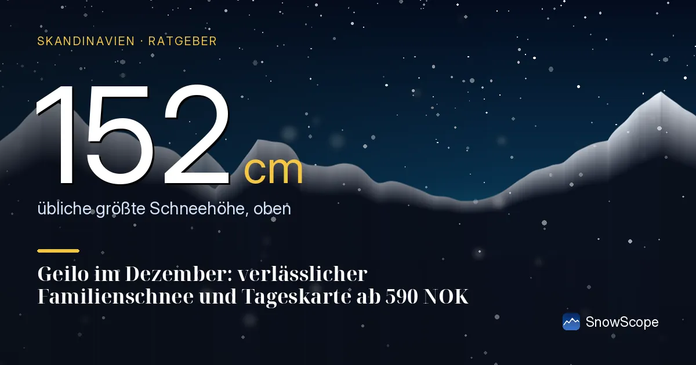

Geilo im Dezember: verlässlicher Familienschnee und Tageskarte ab 590 NOK
Auf der offiziellen Seite von Geilo beginnen die Tageskarten bei 590 NOK, rund 56 EUR, und in unserer Schneehistorie über 46 Winter gehören seine sanften Hänge im Dezember zu den verlässlichsten Norwegens: 96 % der Winter hatten an der Mittelstation (971 m) in der Woche vom 15. bis 21. Dezember mindestens 30 cm.
Die Live-Schneeprognose für Geilo in der SnowScope-AppSchneehöhen, Pulverschnee-Alarme und 3D-Karte, gratis.
Einsteiger und Familien
Das ist der klassische norwegische Familienort: 35 km kartierte Pisten und 20 Lifte auf einer Hochebene, mit bescheidenen 384 m Höhenunterschied zwischen 779 m und 1163 m. Sanft ist das Schlüsselwort. Für die erste Skiwoche zählt der Schnee mehr als die Höhe – und Geilos Schnee beginnt weit unten: Die Talstation hatte in der Woche vom 15. bis 21. Dezember in 80 % unserer Winter 30 cm und war in 46 Wintern am 15. Dezember nie aper.


Gute Genussfahrer
Lange steile Abfahrten gibt es nicht, aber Schnee. Am Gipfel lagen ab dem 8. Dezember in jeder Dezemberwoche in 98 % der Winter mindestens 30 cm, und in 83 % der Winter lagen dort in der Weihnachtswoche 60 cm oder mehr. Ein typischer 15. Dezember bringt 42 cm im Tal, 57 cm an der Mittelstation und 68 cm am Gipfel.
Der Schnee hinter dem Rat
Schnee ist hier gespeichertes Wasser in einer kalten, hohen Landschaft, und dieser Speicher füllt sich früh: Der übliche erste Tag mit 30 cm an der Mittelstation ist der 14. November. Selbst ein mageres Jahr (1 von 10 Wintern) hält an der Mittelstation am 15. Dezember 35 cm.
Der Trend zeigt nach unten, aber nicht dramatisch. Das Dezembermittel im Tal fiel von 51 cm in den ersten 15 Wintern auf 32 cm in den letzten 15, an der Mittelstation von 64 auf 52 cm. Jede Weihnachtswoche der letzten 15 Winter hatte an der Mittelstation noch 30 cm.
Kosten
Die offizielle Skipass-Seite von Geilo zeigt Tageskarten für Erwachsene ab 590 NOK und Mehrtageskarten ab 1.138 NOK; die Preise hängen vom Datum und der Zahl der Tage ab. Zum Euro-Referenzkurs vom 12. November sind 590 NOK rund 56 EUR. Das ist ein Ab-Preis – prüf deine Termine im Shop, bevor du damit rechnest.
Oder lieber Hafjell?
Hafjell, das ehemalige Olympiagebiet bei Lillehammer, hat viel mehr Höhenunterschied (866 m), beginnt aber sehr tief, auf 192 m. Sein Dezemberschnee ist an der Mittelstation etwas dünner: 52 cm an einem typischen 15. Dezember und 85 % der Winter mit 30 cm in der Woche vom 15. bis 21. Dezember. Auch dort sind die Preise dynamisch, und auf der offiziellen Seite konnten wir keinen festen Betrag ablesen.
Für Familien, die verlässlichen Dezemberschnee auf leichten Pisten wollen, ist Geilo die sicherere Wahl.
Tipps für Skifahrer
- Jede Woche ab 8. Dezember buchen: Ab dann hatte der Gipfel in 98 % unserer Winter 30 cm.
- Den Preis für deine genauen Tage online prüfen: 590 NOK ist der Ab-Preis.
- Geilo liegt an der Bahnlinie Oslo-Bergen: Der Zug spart das Auto auf winterlichen Straßen.
- Zieh dich für tiefe Kälte an; die Hochebene ist offen und die Dezembertage sind kurz.
Weitere Karten (externe Seiten)
Quellen und Nachweise
- Geilo: official lift-pass prices (2026-27), checked 13 November 2026 www.skigeilo.no/en/ski-pass
- Hafjell: official lift-pass page of the operator (prices by date; no fixed price quoted), checked 13 November 2026 www.alpinco.com/en/hafjell/buy-day-pass-1-8-days
- European Central Bank euro reference rates (2026-11-12) www.ecb.europa.eu/stats/policy_and_exchange_rates/euro_reference_exchange_rates/html/index.en.html
Zu diesen Zahlen
Schneewerte: SnowScope-Schneehistorie, 46 vergangene Winter (1980-81 bis 2025-26) auf den Höhen des Skigebiets, höhenkorrigiert (eine Schätzung für eine Fläche, keine Meldungen des Skigebiets); „guter Schnee“ = im Wochenmittel 30 cm oder mehr am Boden. Karte: unsere übliche Schneehöhe am 15. Dezember, nach Höhe auf das Gelände verteilt. Pisten und Lifte: OpenSkiMap-Kartierung. Skipasspreise: offizielle Preislisten der Skigebiete, geprüft am 13. November 2026; Preise können sich ändern.
Offizielle Lawinenlageberichte: Varsom (NVE)
Diesen Bericht zitieren
Für Forschung, Lehre oder Presse: Zahlen und Grafiken sind unter CC BY 4.0 mit dieser Quellenangabe frei nutzbar.
SnowScope (2026), Geilo im Dezember: verlässlicher Familienschnee und Tageskarte ab 590 NOK, https://snowscope.app/blog/de/2026/11/geilo-december-ski-trip-family-cheap-snow.html, abgerufen am 2026-11-14
SnowScope (Atlas Labs). (2026, November 14). Geilo im Dezember: verlässlicher Familienschnee und Tageskarte ab 590 NOK. SnowScope snow reports. https://snowscope.app/blog/de/2026/11/geilo-december-ski-trip-family-cheap-snow.html
BibTeX
@misc{snowscope2026geilodecemberskitripfami,
author = {{SnowScope (Atlas Labs)}},
title = {Geilo im Dezember: verlässlicher Familienschnee und Tageskarte ab 590 NOK},
year = {2026},
month = nov,
howpublished = {\url{https://snowscope.app/blog/de/2026/11/geilo-december-ski-trip-family-cheap-snow.html}},
note = {Published 2026-11-14 13:29 UTC; accessed 2026-11-14}
}· CC BY 4.0 · Methoden, Daten und Werkzeuge →
Geilo: Schnee und Temperatur nach Höhe, dieser Winter vs letzter (Werkzeuge) →
Geilo folgen
Gratis: eine Nachricht, wenn Neuschnee kommt, und jeden Morgen die Vorhersage.